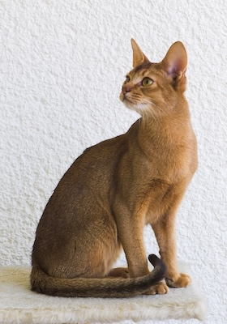

A click, a mouse search and a swift of blues and purples. Continuing with utilizing code as a paint brush. Inspired by this “Computers should not be black boxes but rather understood as engines for creating powerful and persuasive models of the world around us. The world around us (and inside us) is something we in the humanities have been interested in for a very long time. I believe that, increasingly, an appreciation of how complex ideas can be imagined and expressed as a set of formal procedures—rules, models,algorithms—in the virtual space of a computer will be an essential element of a humanities education”(Kirschenbaum 2009). I wanted to try and incorporate circular notions with individual shapes. Where I can locate them with a mouse press through its Yaxes and Xaxis with easing into a romanticized flair. P5 transformed the work to where I was able to loop shapes with different sizes to each other and a flickering disco light shining in the background. “Brute face” animated the circles into a ring around loop. I am going to experiment a couple of times with my code and create further transformative functions. .
